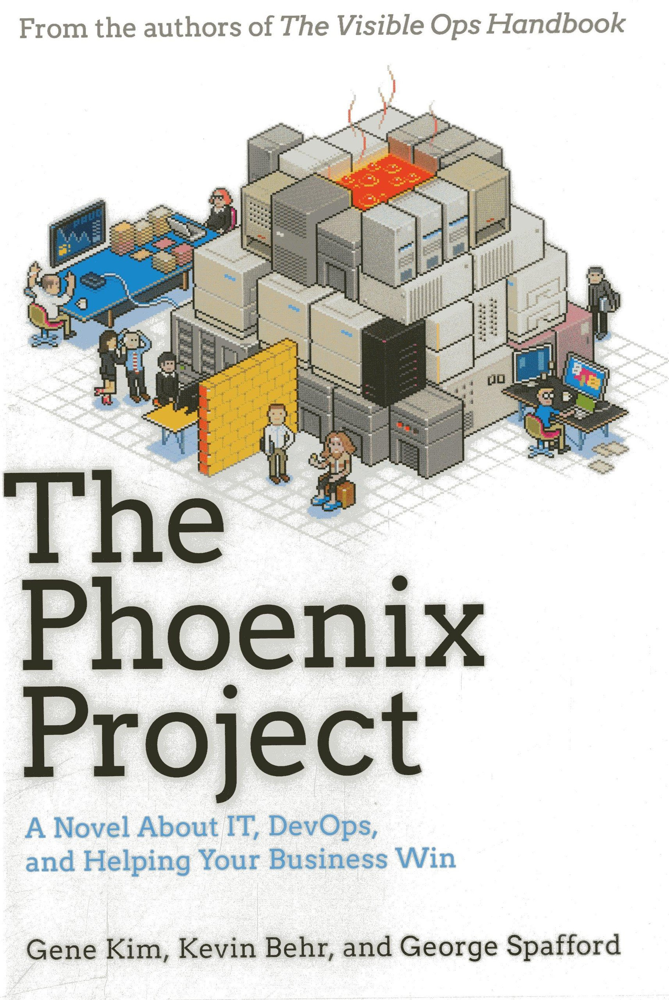
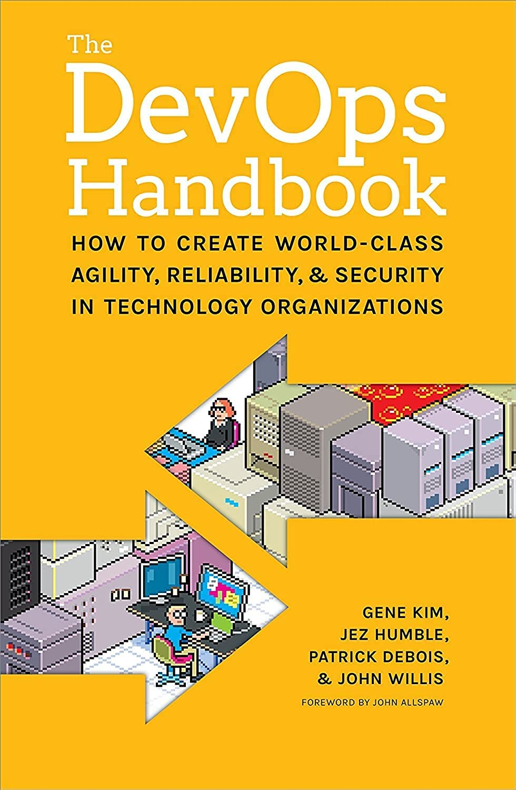
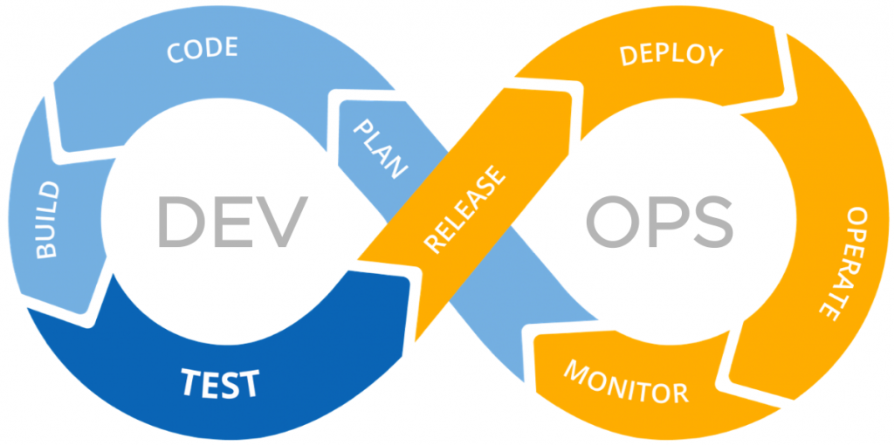
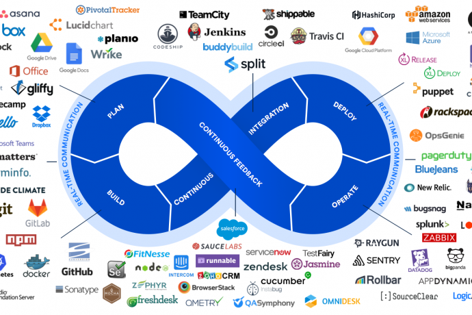
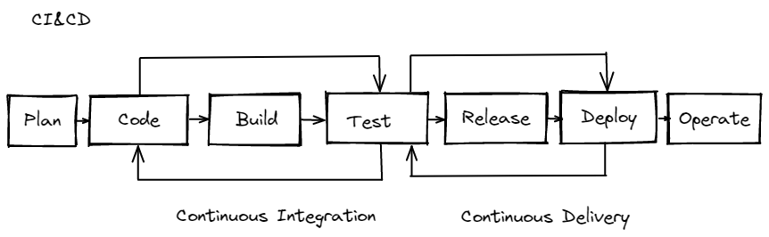
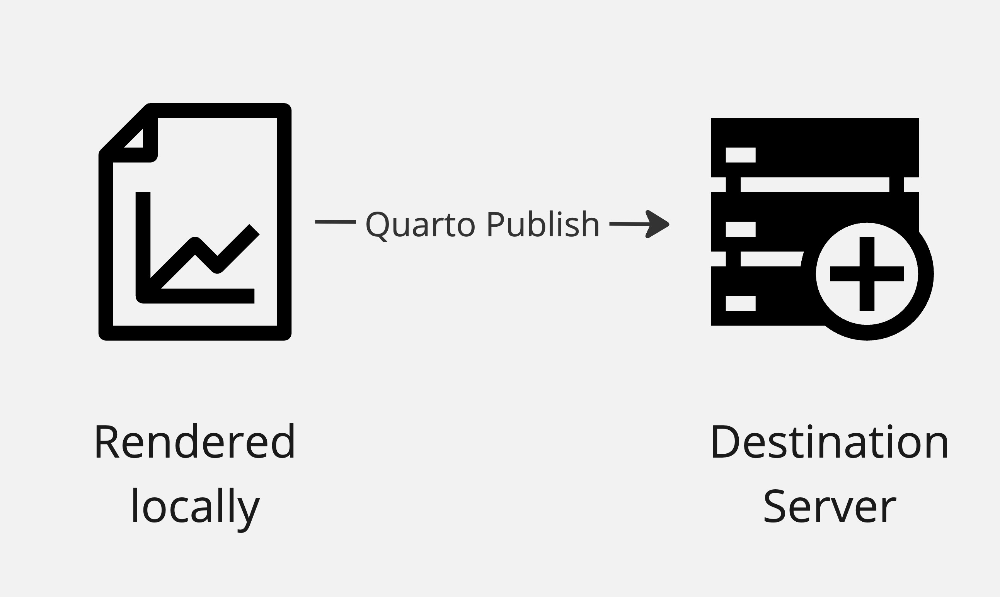
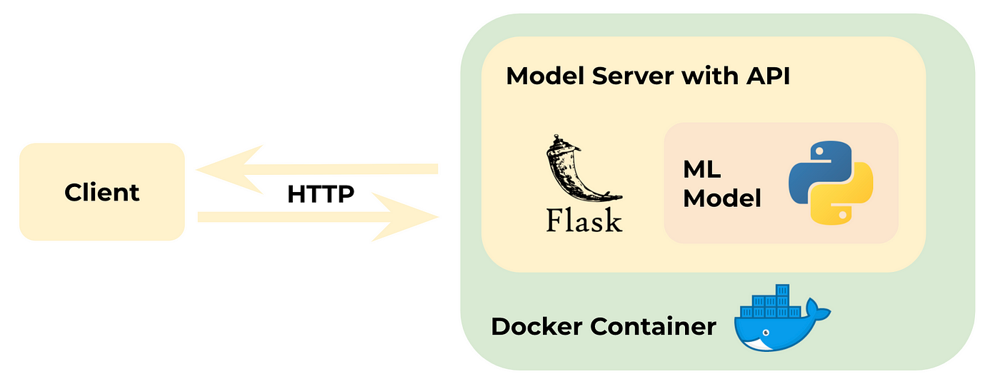
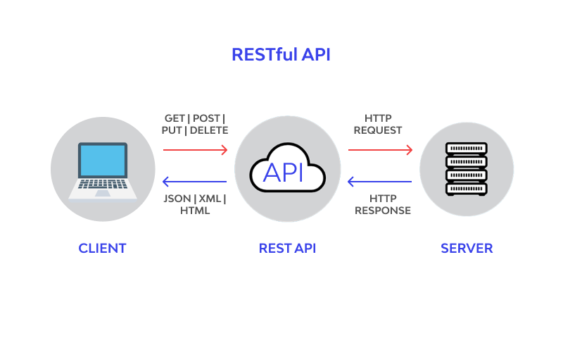

DevOps for Data Scientists
Wifi: Posit Conf 2023
Password: conf2023
Part 1: Introductions, setup, & workshop overview
Meet your instructors
Solutions Engineer at Posit
Former Data Scientist and Data Engineer

- Director of Posit Strategy, former Solutions Engineer
- David Aja is a Solutions Engineer at Posit. Before joining Posit, he worked as a data scientist in the public sector.
- Gagandeep Singh is a former software engineer and data scientist who has worked in a variety of cross-technology teams before joining Posit as a Solutions Engineer.

- Scientist by training turned IT / HPC / Scientific Computing
Solutions Engineering at Posit

Posit’s Solutions Engineering team aims to shrink the distance between the needs of Posit’s customers and our Pro and Open Source offerings, leading with curiosity and technical excellence.
Our customer-facing work helps our customers deploy, install, configure, and use our Pro products.
Special Thanks to Alex Gold!

Author of DevOps for Data Science
Posit Solutions Engineering Team Director
Introduce yourself to your neighbor
Take 5 minutes and introduce yourself to your neighbors.
Word Cloud

Logistics & Workshop Setup
💻 If your WIFI isn’t working let us know as soon as possible!
Name: Posit Conf 2023
Password: conf2023
Pre-workshop Install
Required:
https://registry.hub.docker.com/signup
https://github.com/signup
Optional: (for local development)
https://docs.docker.com/desktop/
https://git-scm.com/book/en/v2/Getting-Started-Installing-Git
https://quarto.org/docs/get-started/
https://posit.co/downloads/
Workshop Install
| Software | Link | Credentials |
|---|---|---|
| Posit Workbench & Connect | http://pos.it/class | Classroom ID: DevOps_workshop |
| Docker Classroom | https://labs.play-with-docker.com/ | Docker Hub credentials |
Documentation & Communication
All documents including slides are available on our website: https://posit-conf-2023.github.io/DevOps/
Discord channel - DevOps-for-data-scientists
Place a note on the back of your laptop:
🟥 - I need help
🟩 - I’m done
Daily Schedule
📅 September 17 and 18, 2023 ⏰ 09:00am - 5:00pm
| Time | Topic |
|---|---|
| 10:30 - 11:00am | Break |
| 12:30 - 1:30pm | Lunch |
| 3:00 - 3:30pm | Break |
Code of Conduct
Everyone who comes to learn and enjoy the experience should feel welcome at posit::conf. Posit is committed to providing a professional, friendly and safe environment for all participants at its events, regardless of gender, sexual orientation, disability, race, ethnicity, religion, national origin or other protected class.
This code of conduct outlines the expectations for all participants, including attendees, sponsors, speakers, vendors, media, exhibitors, and volunteers. Posit will actively enforce this code of conduct throughout posit::conf.
https://posit.co/code-of-conduct/
Workshop Goals
To understand how DevOps can help you in your work as data scientists
To understand the main principles and tools of DevOps
To get hands-on experience putting code into production using common DevOps workflows
To leave the workshop with some “assets” and skills you can use in your work
Agenda & Lab Overview
| Section/Time | Topics | Labs |
|---|---|---|
| Part 1 | Workshop overview Logistics & setup Introductions |
Infrastructure & wifi setup |
| Part 2: DevOps Principles & Tools | Introduction to DevOps Version control & github CI/CD Reproducing workflows and environments |
Lab 1: Deploy your own Quarto website on Github Pages & Posit Connect using GitHub Actions | |
| Part 3: Docker for Data Scientists | How and why data scientists use docker in production Docker: overview and architecture Building docker images and containers Ports & networking |
Lab #2: Write your own Dockerfile to deploy Open Source Shiny Server on Docker playground and host an app on the server |
| Part 4: Data Science in Production | Choosing your deployment method APIs and when to use them Just enough auth Logging & metrics & testing |
Lab #3: Host and secure an API on Posit Connect |
| Part 5: Discussion | Course feedback Questions for the team |
Workshop Survey |
Supplemental Materials
- Linux
- vim
- Git
- Cheat sheets
Most important Linux commands
| Command | Description | Examples |
|---|---|---|
| cd | change directory | https://linuxize.com/post/linux-cd-command/ |
| ls | list all files in current working directory; add -lha flag for hidden files |
https://linuxize.com/post/how-to-list-files-in-linux-using-the-ls-command/ |
| pwd | print working directory | https://linuxize.com/post/current-working-directory/ |
| touch | create a file | https://linuxize.com/post/linux-touch-command/ |
| mkdir | create a directory | https://linuxize.com/post/how-to-create-directories-in-linux-with-the-mkdir-command/ |
| vim | open a file in Vim text editor | https://linuxize.com/post/how-to-save-file-in-vim-quit-editor/ |
| curl | command-line utility for transferring data from or to a server. Uses one of the supported protocols including HTTP, HTTPS, SCP , SFTP , and FTP | https://linuxize.com/post/curl-command-examples/ |
| echo | print argument to standard output | https://linuxize.com/post/echo-command-in-linux-with-examples/ |
| $PATH | environmental variable that includes colon-delimited list of directories where the shell searches for executable files | https://linuxize.com/post/how-to-add-directory-to-path-in-linux/ |
What we won’t cover
How to become a DevOps engineer
Python-based workflows
In-depth security and auth practices
Part 2: DevOps Principles & Tools
Section Goals
To understand the main principles of DevOps and how they can improve data science workflows.
To get familiar with the DevOps toolkit.
To get familiar with how the
renvpackage helps create reproducible environments for your R projects.To get comfortable using the terminal for interacting with git and github.
To understand how to authenticate to github using SSH or HTTPS.
To practice creating a CI/CD workflow using yaml and Github Actions.
“DevOps is a set of cultural norms, practices, and supporting tooling to help make the process of developing and deploying software smoother and lower risk.”
Definition credit:Alex Gold, https://www.do4ds.com
But first…a very brief history lesson


So you want to create an app?
Problems DevOps tries to solve
- Siloed teams
- Miscommunication
- Slow & manual release cycles
- Technical knowledge siloes
- Incompatible systems or tech stacks
- Opaque undocumented processes
Common DevOps Principles
🤲 Collaboration
🚚 Continuous Integration & Delivery
🤖 Automation
📔 Reproducibility
👨🎤 Culture change
Why should we as data scientists care about this?
Has this ever happened to you?
You come back to code from a year ago and now it doesnt run!
Reproducibility
You need to hand off your model to the Engineering team but they only code in Java
Continuous Integration & Delivery & Collaboration
Your boss asks you to share that Shiny app with a client but the ops team is too busy working on their roadmap to help you deploy it somewhere.
Culture Change
Why should data scientists/analysts care about DevOps?
Data scientists are developers!
Data science careers have moved from academic sphere to tech and software but education hasnt always followed
Automation, collaboration, testing can dramatically improve data work and improve reproducibility
The many hats of a data scientist
Improve collaboration & communication with other teams
Responsibility of the analyst
The Devops Process Flow

Proliferation of tools
An opinionated take on tools
- CI/CD
- Environment Management
- Version Control & Git workflows
- Package Management
- Automation & Build tools
- Continuous Monitoring and Logging
The CI/CD Pipeline
Environment Management
exploratory analysis and experiments | as similar to prod as possible | separate from dev and test | | often just your local desktop | unit & integration testing | created using code | | “sandbox” with data that’s as close to real as possible | data validation | code promotion process + tests | | | access to R/Python packages | | completely automatic
Version Control & Workflows

Lab Activity - developing locally using Quarto
🟥 - I need help
🟨 - I’m still working
🟩 - I’m done
Login to pos.it/class with code devops_workshop
Lab 1 Part 1:
Is version control secure?
- Our code is still saved locally
- How do we make sure that the code we push to Github (or elsewhere) is secure?
A short auth teaser
- We can use a variety of data sharing “transfer protocols”
- Protocols specify what kind of traffic is moving between 2 machines
- Use different security mechanisms
- Ports on the host and destination specifies where to direct the traffic

Git protocol options
| http | https | SSH |
|---|---|---|
| port 80 | port 443 | port 22 |
http - text sent over the internet
https - http encrypted with “SSL/TLS”
SSH - secure shell
Reproducing your environment
What are the layers that need to be reproduced across your dev, test, and prod environments?
What’s your most difficult reproducibility challenge?
Layers of reproducibility

Packages vs. Libraries vs. Repositories
Package - contains code, functions, data, and documentation.
Library - is a directory where packages are installed.
Repository - a collection of packages. CRAN is a public external repository that is a network of servers that distribute R along with R packages.
renv workflow

Example
# install.packages("renv")
renv::init()
renv::snapshot()
lapply(.libPaths(), list.files)🔍 Live code
Lab Activity - renv workflow & github authentication
🟥 - I need help
🟨 - I’m still working
🟩 - I’m done
Lab 1: Part 2 & 3
Build tools
Virtualization/Containerization
Infrastructure as code
Automation with Github Actions/Jenkins/CircleCI
Cloud devops tools (Azure Devops, Google Cloud Build)
Illustration credit:
Power of YAML
YAML Ain’t Markup Language
communication of data between people and computers
human friendly
configures files across many execution environments
YAML
EmpRecord:
emp01:
name: Michael
job: Manager
skills:
- Improv
- Public speaking
- People management
emp02:
name: Dwight
job: Assistant to the Manager
skills:
- Martial Arts
- Beets
- Saleswhitespace indentation denotes structure & hierarchy
Colons separate keys and their values
Dashes are used to denote a list
Example - YAML in action
- Docker compose yaml file to spin up all 3 Posit Pro products
🔍 Live code
Exercise - Inspect your YAML
🟥 - I need help
🟨 - I’m still working
🟩 - I’m done
Inspect your _quarto.yml file and identify what each part of it does using the quarto site.
Continuous Integration Example
.jpg)
Other GHA Categories
Deployment
Security
Continuous Integration
Automation
Pages
Make your own!
Quarto Publish Flows
Manually

Continuous Integration
.jpg)
GHA Structure

Open source ecosystem of available actions
Actions Syntax
Lab Activity
🟥 - I need help
🟨 - I’m still working
🟩 - I’m done
Part 4 of Lab: Deploy Quarto with GHA including the exercises
Logging
log session ➡️ log statement ➡️ log entry
Monitoring
If you want to register metrics from your API or app with Prometheus, there is an official Prometheus client in Python and the {openmetrics} package in R makes it easy to register metrics from a Plumber API or Shiny app.
There’s a great Get Started with Grafana and Prometheus doc on the Grafana Labs website if you want to actually try it out.
Part 3 Goals: Docker for Data Scientists
- to understand different docker workflows
- to learn common docker syntax for building and running containers
- to get hands on experience building and running containers
- to explore the linux file system
Why use a container at all?
- allows you to package up everything you need to reproduce an environment/application
- lightweight system without much overhead
- share containers with colleagues without requiring them to have to set up their own local machines
- quick testing and debugging
- allows you to easily version snapshots of your work
- scaling up
Our Docker Environment

Workflow

Architecture

Images

Dockerhub Registry
https://hub.docker.com/search?q=
Containers

How can data scientists use docker?
Example - testing & versioning
docker pull postgres:12
docker pull postgres:latest
docker container ls -a
docker run -d -e POSTGRES_PASSWORD=mysecretpassword --name postgres_early imageID
docker run -d -e POSTGRES_PASSWORD=mysecretpassword --name postgres_new imageID
docker container ls -a
docker stop
docker restart🔍 Live code
Example - reproduce environments
https://hub.docker.com/u/rocker
# pull the image
docker pull rocker/r-base
# run container
docker run --rm -it rocker/r-baseExample - isolate applications
https://hub.docker.com/u/rstudio
DO NOT RUN!
docker run -it --privileged \
-p 3939:3939 \
-e RSC_LICENSE=$RSC_LICENSE \
rstudio/rstudio-connect:ubuntu2204Example - Docker as deployment strategy
Example - Docker in CI pipeline
jobs:
build:
runs-on: ubuntu-latest
steps:
-
name: Checkout
uses: actions/checkout@v3
-
name: Login to Docker Hub
uses: docker/login-action@v2
with:
username: ${{ secrets.DOCKERHUB_USERNAME }}
password: ${{ secrets.DOCKERHUB_TOKEN }}
-
name: Set up Docker Buildx
uses: docker/setup-buildx-action@v2
-
name: Build and push
uses: docker/build-push-action@v4
with:
context: .
file: ./Dockerfile
push: true
tags: ${{ secrets.DOCKERHUB_USERNAME }}/latestModes for running containers
| Mode | Run command | Use case |
|---|---|---|
| Detached | docker run -d |
This runs the container in the background so the container keeps running until the application process exits, or you stop the container. Detached mode is often used for production purposes. |
| Interactive + terminal | docker run -it |
This runs the container in the foreground so you are unable to access the command prompt. Interactive mode is often used for development and testing. |
| Remove everything once the container is done with its task | docker run --rm |
This mode is used on foreground containers that perform short-term tasks such as tests or database backups. Once it is removed anything you may have downloaded or created in the container is also destroyed. |
Lab Activity - Running containers
🟥 - I need help
🟨 - I’m still working
🟩 - I’m done
Lab 2: Part 1
Running containers
docker pull ubuntu
docker image ls -a
docker run -it ubuntu bash
ls
whoami
hostname
# exit the container with Ctrl+D or exit
docker run -d ubuntu
docker container ls -a
docker run -d -P --name nginx1 nginx:alpine
docker container stop nginx1
docker run --rm debian echo "hello world"Container Debugging
docker run -it -d ubuntu
docker container ls -a
docker exec -it CONTAINER_ID bash
docker container run -d --name mydb \
--name mydb \
-e MYSQL_ROOT_PASSWORD=my-secret-pw \
mysql
docker container logs mydb🔍 Live code
Lab Activity - Debugging Containers
🟥 - I need help
🟨 - I’m still working
🟩 - I’m done
Complete Lab 2: Part 2
Port Mapping with docker run -p
docker run -p host_port:container_port

docker pull httpd:alpine
docker pull httpd:latest
docker inspect --format='{{.Config.ExposedPorts}}' httpd:latest
docker inspect --format='{{.Config.ExposedPorts}}' httpd:alpine
docker run -p DockerHostPort:ApplicationPort
docker run -d -p 80:80 --name httpd-latest httpd:latest
curl http://localhost:81
docker run -d -p 6574:80 --name httpd-alpine httpd:alpine
curl http://localhost:80🔍 Live code
Lab Activity - Mapping ports
🟥 - I need help
🟨 - I’m still working
🟩 - I’m done
Lab 2: Part 3
Persisting data with Docker
State is persistent information that is recorded and recalled later
Containers are designed to be ephemeral e.g. stateless by default
Data applications are usually stateful and more complex to deploy
Options
| Storage Type | Description | Use case |
|---|---|---|
| Volume mount | Create new volume managed by container | Need to transfer, share, data between multiple containers |
| Bind mount | Mount location on host to container | |
| External Database | Container remains stateless; Container connects to external database |
|
| External Shared File System | Shared network file system int the cloud | Managed or multi-cluster deployments |
Lab Activity - Persisting Data
🟥 - I need help
🟨 - I’m still working
🟩 - I’m done
Lab 2: Part 4
Building Docker Images
Images are build using a Dockerfile or interactively “on-the-fly” for testing
make this a diagram Step 1: Commit Step 2: Tag Step 3: Push
Lab Activity - Commit and push container to DockerHub
🟥 - I need help
🟨 - I’m still working
🟩 - I’m done
Complete Lab 2: Part 5
A few Dockerfile Build Commands
| Command | Description |
|---|---|
| ARG | Define variables passed at build time |
| FROM | Base image |
| ENV | Define variable |
| COPY | Add local file or directory |
| RUN | Execute commands during build process |
| CMD | Execute command when you run container; once per Dockerfile |
| ENTRYPOINT | Execute command to change default entrypoint at runtime |
| USER | Set username or ID |
| VOLUME | Mount host machine to container |
| EXPOSE | Specify port pn which container listens at runtime |
Dockerfile Example
Walk through Posit Connect Dockerfile
Activity - Putting it all together in Dockerfile
🟥 - I need help
🟨 - I’m still working
🟩 - I’m done
Complete Lab 2: Part 5
Part 4: Data Science in Production
Data Science in Production
Presentation Layer
Processing Layer
Data store Layer
Choosing the right presentation layer
Choosing an API
Production “State”
Questions to ask once your content is able to be consumed by your intended audience
Where is it deployed?
Is it secure and accessible?
Is it maintainable?
Does it scale?
Is your code efficiently written?
Is it tested?
Where is it deployed?
list of PaaS / Caas and highlight Connect
Lab Activity:
🟥 - I need help
🟨 - I’m still working
🟩 - I’m done
Part 1: Host API on Posit Connect
Is it secure?
Basic Auth
API keys
Token-based
Securing credentials
username and password
centralized credential server
SSO
Is it accessible?
RBAC
Lab Activity:
🟥 - I need help
🟨 - I’m still working
🟩 - I’m done
Part 2:
Is it maintainable
git-backed deploymnet
Is it scalable?
scaling up vs. scaling out
connect shiny resource options
Is your code efficient?
data storage
computations
caches
Is it tested
testing as part of CI/CD